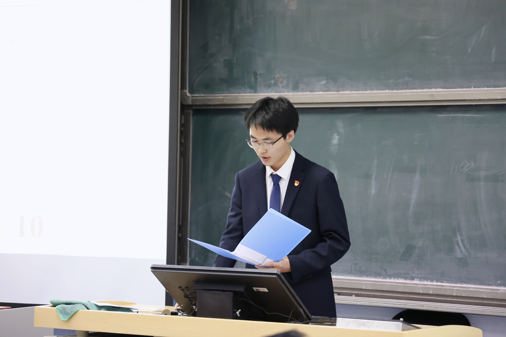
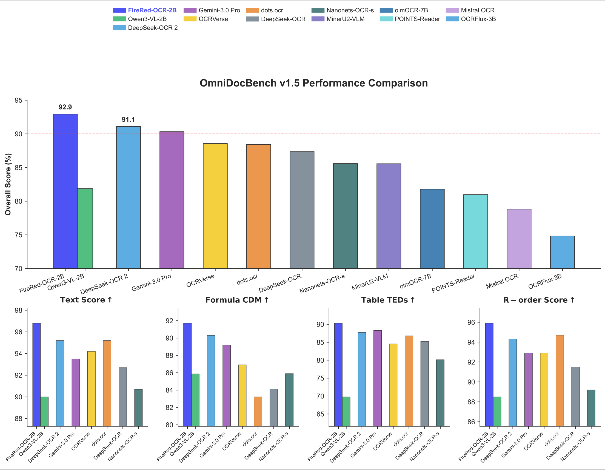
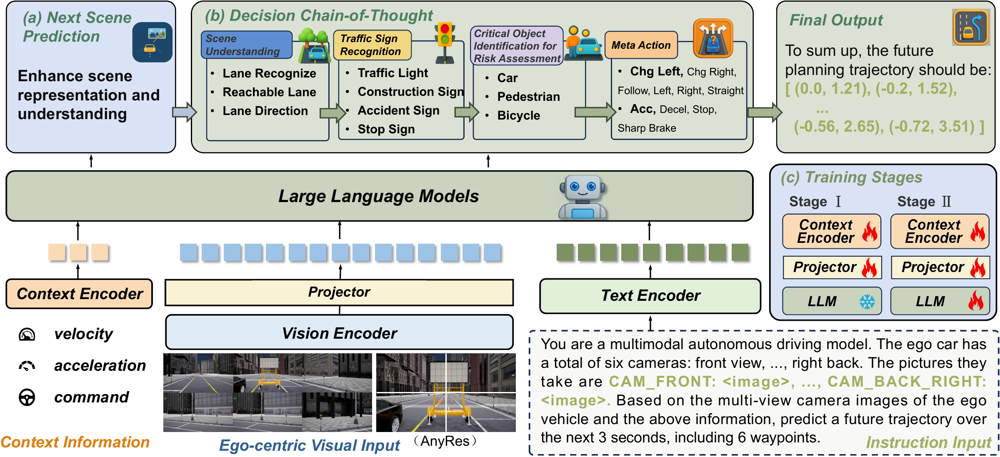
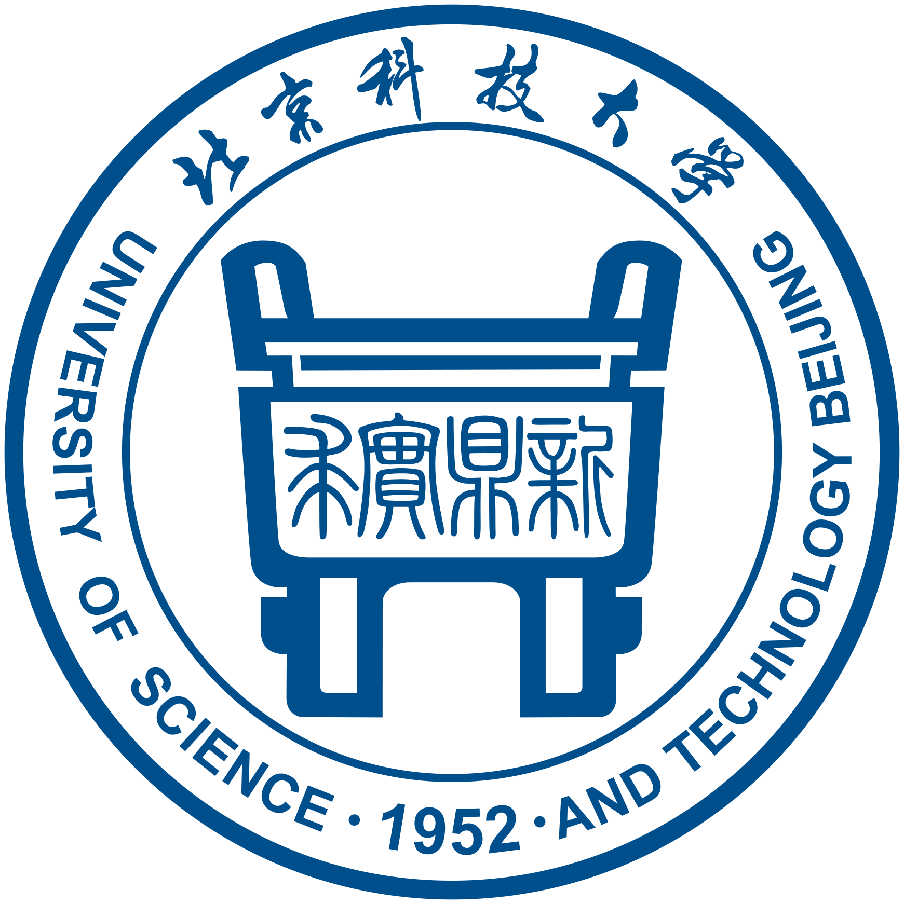

Zuodong Zhong (钟祚栋)
Ph.D. Student
Peking University

Simple and EffectiveMy research philosophy.
Biography
I am a Ph.D. student at Peking University, where I began my doctoral studies in September 2026. I receive guidance from Asst. Prof. Yixing Huang.
Previously, I studied Automation at the School of Automation and Electrical Engineering, University of Science and Technology Beijing, from August 2022 to June 2026, where I was advised by Prof. Qing Li.
My current research focuses on efficient architectures for long-video understanding, with an emphasis on sparse attention mechanisms. I aim to help multimodal large language models process long videos more efficiently and effectively. I am fortunate to receive guidance from Assoc. Prof. Longteng Guo and Prof. Jing Liu.
I was a research intern with the Super Intelligence Team, Xiaohongshu, contributing to FireRed-OCR as a core contributor.
During an earlier internship at CASIA, I studied diffusion models and later VLMs for autonomous driving, contributing to ReasonPlan. I was advised by Assoc. Prof. Qichao Zhang and Prof. Dongbin Zhao. I enjoy using the Feynman technique and have shared my notes on diffusion models in my Zhihu column.
News
- Named an Outstanding Graduate of Beijing Higher Education Institutions.
- FireRed-OCR is now open source! I was a core contributor. At release, it achieved SOTA among end-to-end methods on OmniDocBench v1.5 (92.94).
- Received the Baosteel Outstanding Student Award (awarded to only two undergraduates at USTB each year).
- ReasonPlan was accepted to the Conference on Robot Learning (CoRL 2025)!
- Received the Liu Qin Science and Technology Star Award (Top 1%; with thanks to USTB alumnus Qin Liu).
- Received the China National Scholarship.
Publications & Projects
-

FireRed-OCR- A 2B-parameter vision-language model for end-to-end structured document parsing, combining progressive training with format-constrained reinforcement learning. Achieved 92.94 on OmniDocBench v1.5, reaching SOTA among end-to-end methods at release.
-

ReasonPlan: Unified Scene Prediction and Decision Reasoning for Closed-loop Autonomous Driving- Combining next-scene prediction and decision chain-of-thought to improve multimodal reasoning for closed-loop autonomous driving.
Selected Honors & Awards
- Outstanding Graduate of Beijing Higher Education Institutions
- Baosteel Outstanding Student Award (awarded to only two undergraduates at USTB each year)
- RAICOM National Finals, Second Prize
- China Collegiate Computing Design Competition, Second Prize
- Yonggang Scholarship (Top 3%)
Research Experience
-
Super Intelligence Team, Xiaohongshu
November 2025 – April 2026, Research Intern.
Core contributor to FireRed-OCR, researching end-to-end structured document parsing.
-
Institute of Automation, Chinese Academy of Sciences
July 2024 – August 2025, Research Intern.
Explored diffusion models and vision-language models for autonomous driving; contributed to ReasonPlan.
Advised by Assoc. Prof. Qichao Zhang and Prof. Dongbin Zhao.
Education
-

-

University of Science and Technology Beijing
Undergraduate Studies in Automation, School of Automation and Electrical Engineering, August 2022 – June 2026
Served as President of the Suo'ao Technology Center student club.
Advised by Prof. Qing Li.